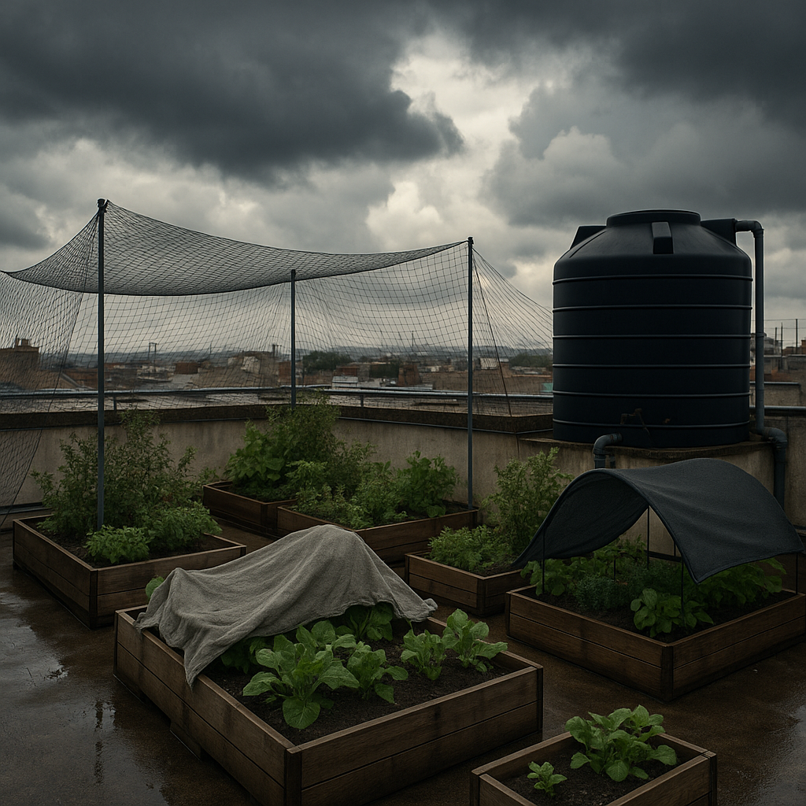

Urban Agriculture and Rooftop Gardening
Overview of Urban Agriculture
Urban agriculture is the practice of growing food within city environments. It includes community gardens, rooftop farms, balcony planting, and vertical farming systems. As urbanization increases and food security becomes a concern, cities are adopting sustainable solutions like rooftop gardening to produce fresh food locally.
These practices reduce dependence on rural food transport and create green spaces in densely populated areas. Urban agriculture contributes to a healthier, more self-reliant food system.
Benefits of Rooftop Gardening
Rooftop gardens utilize unused building space to grow herbs, vegetables, and fruits. They help lower building temperatures by absorbing heat, reduce air pollution, and support biodiversity in cities. Rooftop farms also improve mental health and offer educational opportunities in urban schools and communities.
Economically, they reduce grocery costs and create entrepreneurial opportunities for urban farmers and startups.
Designing a Rooftop Garden
To start a rooftop garden, consider load-bearing capacity, sunlight exposure, and access to water. Use lightweight containers or raised beds with good drainage. Organic compost and soil mixes are essential for healthy plant growth.
Some rooftop farms include hydroponic or vertical structures to maximize space. Drip irrigation systems can reduce water waste and simplify maintenance.
Challenges and Solutions
Common challenges include harsh weather, limited space, and water management. High winds and heavy rains can damage rooftop crops. Proper fencing and shade nets protect delicate plants, while rainwater harvesting systems help store water during dry seasons.
Policy restrictions and initial setup costs are also barriers. However, government grants and community support can make rooftop gardening more accessible to urban residents.
Future of Urban Farming
The future of urban farming is linked with innovation and sustainability. Smart sensors, automated watering, and climate control systems will make rooftop farming more efficient. Cities like Singapore and New York are already investing in urban agriculture to improve food security and environmental quality.
As more people recognize the benefits, rooftop gardening will become a regular feature of urban architecture, promoting a greener and healthier urban lifestyle.